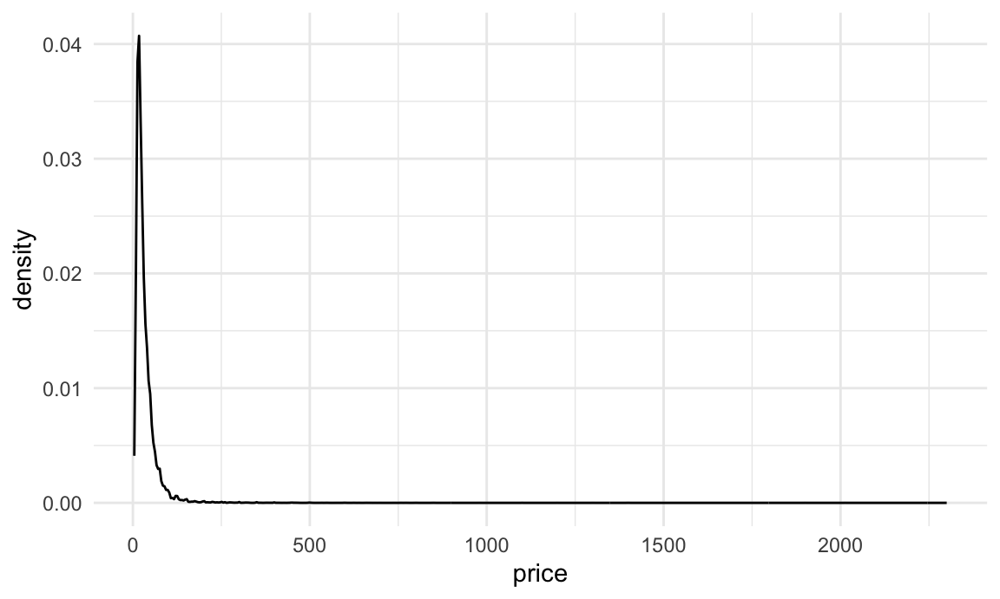
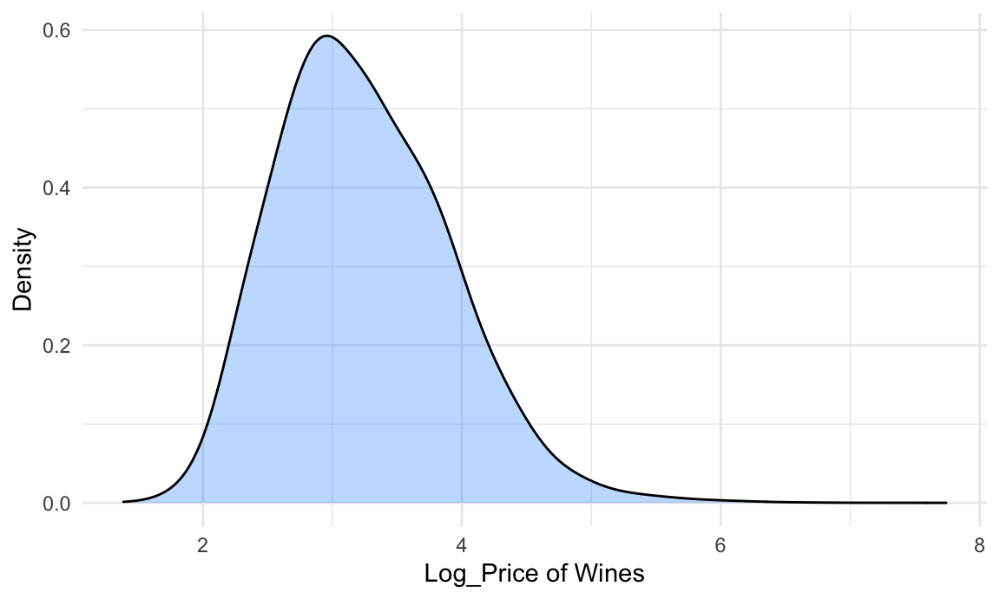
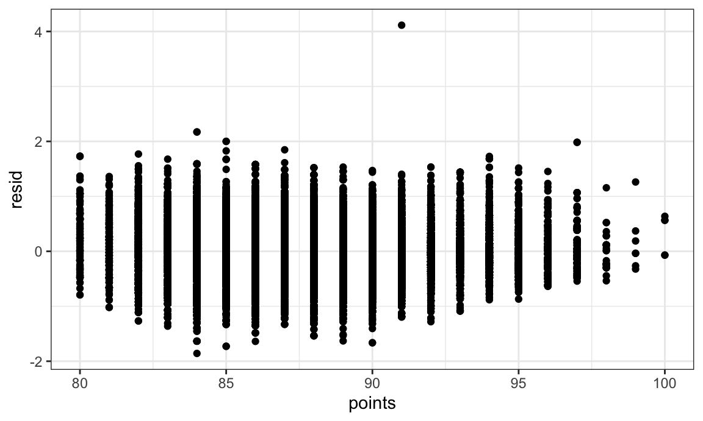

In this analysis, we are interested in whether wine is more expensive as its points(rated by *Wine Enthusiast) increases, adjusting for variables including variety and continent of production.
## Parsed with column specification:
## cols(
## X1 = col_double(),
## country = col_character(),
## description = col_character(),
## designation = col_character(),
## points = col_double(),
## price = col_double(),
## province = col_character(),
## region_1 = col_character(),
## region_2 = col_character(),
## variety = col_character(),
## winery = col_character()
## )## Parsed with column specification:
## cols(
## Continent_Name = col_character(),
## Continent_Code = col_character(),
## Country_Name = col_character(),
## Two_Letter_Country_Code = col_character(),
## Three_Letter_Country_Code = col_character(),
## Country_Number = col_double()
## )a little bit tidying, add continent column to 150k wine data
## Warning: Removed 13697 rows containing non-finite values (stat_density). The highly skewed pattern needs to be log-linear transformed before fitting the regression model.
## `summarise()` ungrouping output (override with `.groups` argument)## `geom_smooth()` using formula 'y ~ x'## Warning: Removed 2183 rows containing non-finite values (stat_smooth).## Warning: Removed 2183 rows containing missing values (geom_point).
Comment: We see a linear trend in price vs. points. This implies a positive correlation between price and points. The trend lines for the 4 most frequent varieties are very close together. So there is a similar positive correlation between price and points for each variety.
## [1] 0.4291898## [1] 0.433479Comment: r^2 of 0.429 without interaction term suggests a moderate association between points, variety and log(price). Although there is a significant p-value of points - variety interactions, the coefficient of determination does not change much when interaction term is added. Therefore, we consider the interaction as not significant, which means that the relationship between points and price does not vary by different variety. So we delete the term points*variety from model.
Is continent significant?
## # A tibble: 2 x 6
## res.df rss df sumsq statistic p.value
## <dbl> <dbl> <dbl> <dbl> <dbl> <dbl>
## 1 49478 12566. NA NA NA NA
## 2 49473 11632. 5 934. 794. 0Yes. Since p-val = 0, the larger model (log_price ~ points + variety + continent) is superior, which means continent is a significant variable.
| continent | (Intercept) | points | varietyPinot Noir | varietyCabernet Sauvignon | varietyRed Blend |
|---|---|---|---|---|---|
| North America | -4.977 | 0.093 | 0.343 | 0.403 | 0.171 |
| Oceania | -8.044 | 0.126 | 0.330 | 0.110 | 0.068 |
| Europe | -11.964 | 0.175 | 0.225 | -0.182 | -0.171 |
| Asia | -4.120 | 0.082 | -0.013 | 0.319 | 0.228 |
| South America | -6.018 | 0.101 | 0.202 | 0.016 | 0.439 |
| Africa | -8.301 | 0.128 | 0.573 | 0.122 | 0.133 |
 Unequal variance of residual tells us that we need to do bootstrap before fitting the model.
## `summarise()` ungrouping output (override with `.groups` argument)## # A tibble: 5 x 3
## term mean_est sd_est
## <chr> <dbl> <dbl>
## 1 (Intercept) -4.98 0.0678
## 2 points 0.0931 0.000768
## 3 varietyCabernet Sauvignon 0.403 0.00722
## 4 varietyPinot Noir 0.343 0.00596
## 5 varietyRed Blend 0.171 0.00902